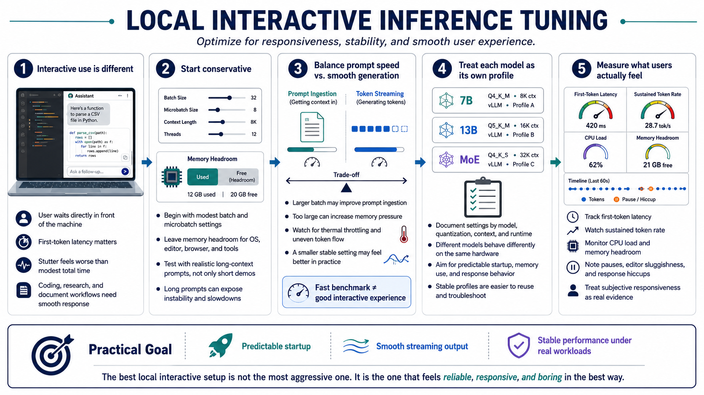

Tuning for Local Interactive Use
Connecting to LMS... Progress: in progress

Narration
Local interactive inference has a different personality than server tuning. The user is usually waiting directly in front of the machine, so responsiveness matters. A coding assistant, research helper, or document analysis workflow may tolerate modest total response time, but it feels broken if the first token takes too long or generation stutters badly.
For this environment, conservative settings are often the right starting point. Choose a batch size and microbatch size that leave memory headroom for the operating system, editor, browser, and other tools. If the workload uses long-context prompts, test with realistic documents instead of short demos. Long prompts can make a configuration that looked stable suddenly feel slow or fragile.
Balance prompt speed against smooth generation. A larger batch setting may speed up ingestion of a long prompt, but if it causes memory pressure, thermal throttling, or uneven generation, the user experience may be worse. A smaller setting that streams reliably can be better for interactive work than a larger setting that wins one benchmark and then causes pauses.
Document stable settings by model, quantization, context length, and runtime. A 7B model, a 13B model, and a larger mixture model can behave very differently on the same hardware. Treat each configuration as its own operating profile. The result should be boring in the best way: predictable startup, predictable memory use, and predictable response behavior.
Local users also notice interruptions that aggregate metrics hide. A benchmark may report an acceptable average, while the actual assistant pauses at awkward times or makes the editor feel sluggish. Treat subjective responsiveness as evidence, then connect it back to measurements such as first-token latency, memory headroom, CPU load, and sustained token rate.